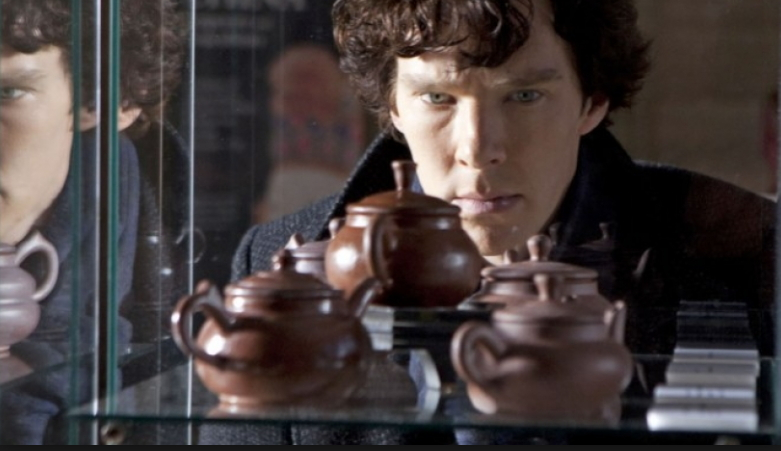

SHERLOCK S01 E02 THE BLIND BANKER

Sherlock is a loose adaptation of Arthur Conan Doyle's Sherlock Holmes stories, taking place in the modern day. "The Blind Banker" follows Sherlock (Benedict Cumberbatch) and John Watson (Martin Freeman) as they investigate a series of ciphers representing numbers in an ancient Chinese numeral system which have been left by a Chinese smuggling ring who seem intent on killing to retrieve an item that one of them stole.